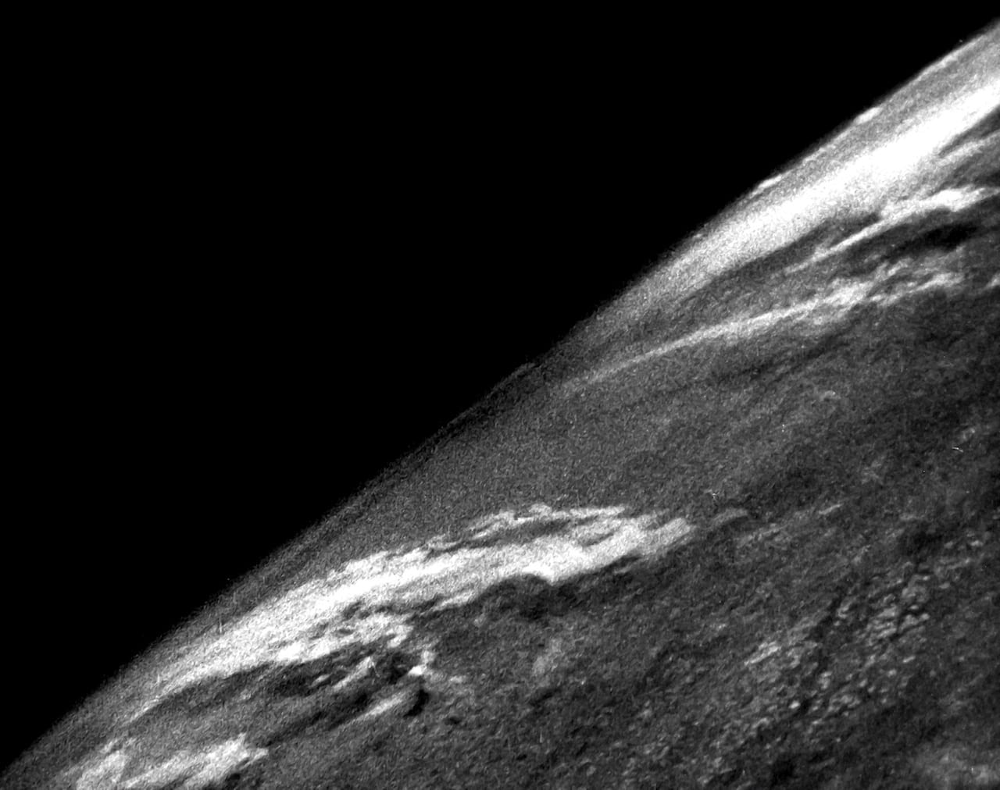
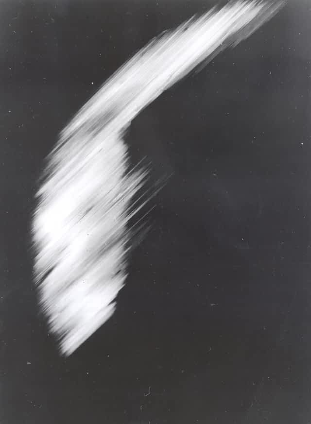
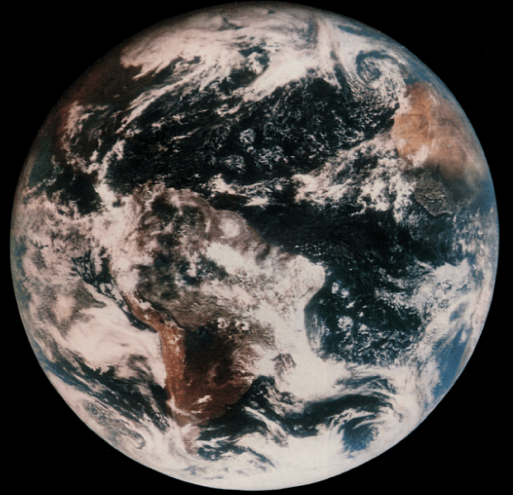
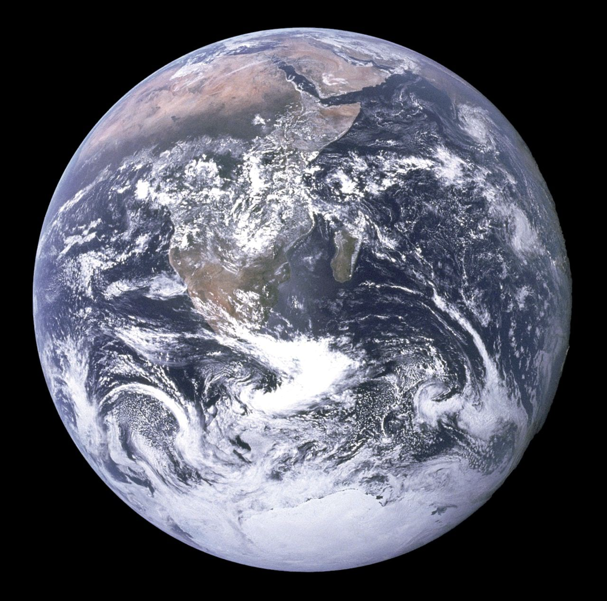
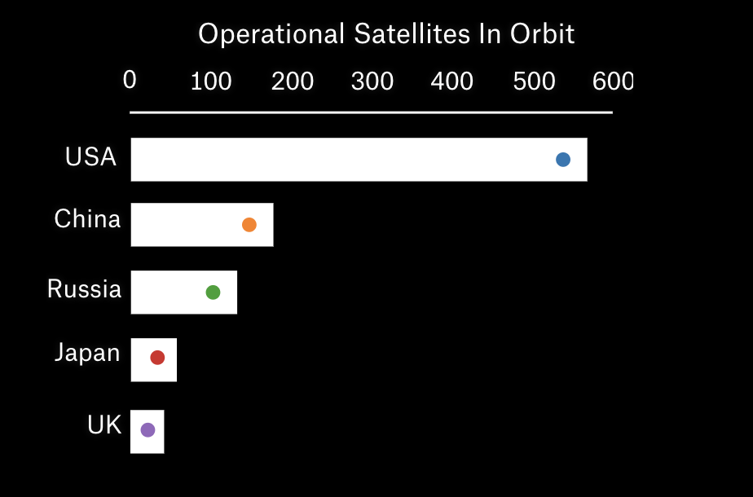
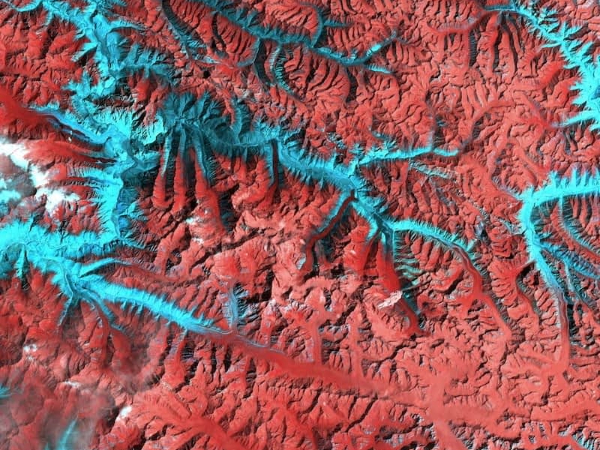
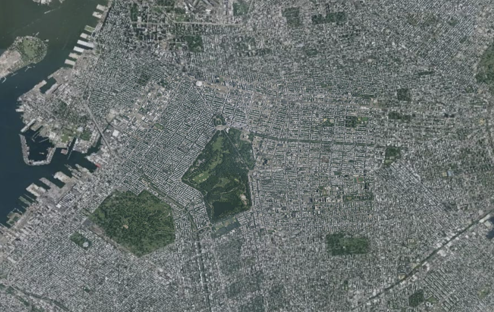
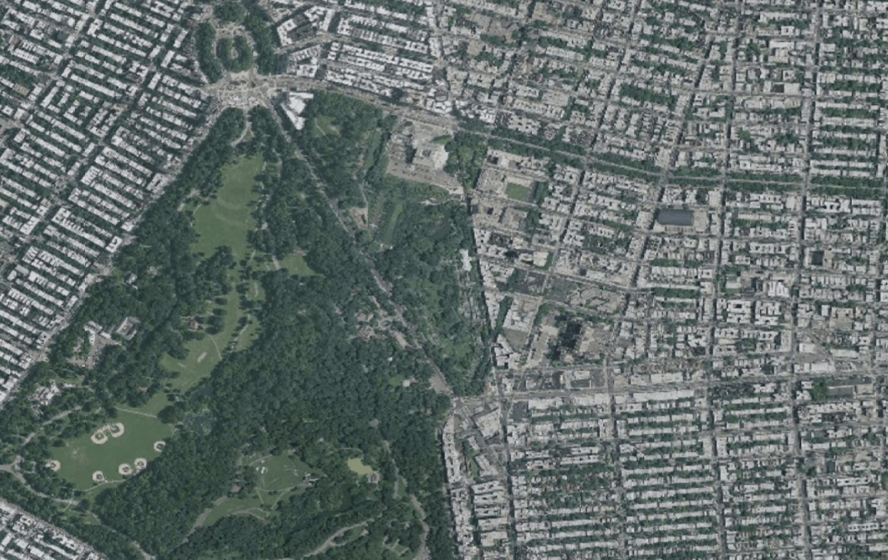
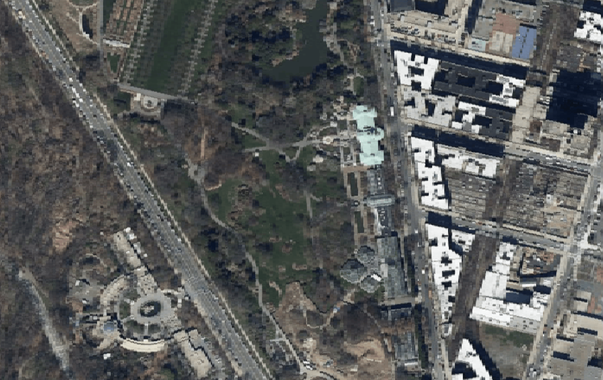

1946 White Sands Missile Range/Applied Physics LaboratoryHumans have been trying to capture pictures of Earth since the invention of the camera in the 1800s. The earliest aerial photographs were taken from the tops of tall buildings, from kites and balloons, and even from cameras attached to pigeons in flight. In 1946, just after World War II, American scientists strapped a camera to a captured German V2 rocket and launched it into space.
The camera captured a grainy video, providing the first look at our planet from space. The images — one of which you are looking at now — represented a major step forward, not only in humanity's drive to explore to reaches beyond Earth, but also in our ability to monitor and care for our own planet.
The photos showed the curvature of the Earth, but they weren't taken from far enough away to see the Earth as a circular disc. In order to obtain this kind of picture, and to build a more sustainable observation program, satellites were developed.
The first imaging satellite was Explorer VI. Launched in 1959, two years after the launch of the Russian Sputnik, Explorer VI took the first photos of Earth from orbit, although they were rather blurry and still didn't show the entire Earth.
This led Stewart Brand, a member of the countercultural movement of the 60s, to start a campaign in 1966 calling for such images to be produced. Under the influence of LSD and having recently heard Buckminster Fuller lecture against the myth of the flat earth, Brand created a pin that was widely distributed in the scientific and academic communities * . The pin simply stated, "Why haven’t we seen a photograph of the whole Earth yet?"
Although Americans didn't know it at the time, a Russian weather satellite achieved this goal later the same year, obtaining the grainy photo shown here.
 Explorer VI spacecraft
Explorer VI spacecraft

First images from Explorer VI. Earth as seen from a Russian Molniya satellite, 1966.
Earth as seen from a Russian Molniya satellite, 1966.
Color images and movies were soon available at higher resolutions. Because of differences in cameras and other sensing equipment, different photographs may appear to show the Earth with different color tones.
This image, taken in 1967, was obtained by a U.S. Applications Technology Satellite, AST-3. Another image taken by the same satellite would later adorn the cover of the first issue of Brand's Whole Earth Catalog.

1967 AST-3/NASAAt the same time that this satellite technology was being developed, NASA was gearing up to explore the solar system. The space program has helped to expand our knowledge of the solar system and our own planet’s place within it; it also led to a trove of beautiful images.
In 1972 astronauts travelling to the moon aboard the Apollo 17 captured one of the most recognizable images of the twentieth century, Blue Marble. The photograph was taken during the last manned lunar mission - it marks the last time human beings have been far enough into space to take a picture that shows the entire Earth like this.
The same year that Blue Marble was photographed, the Earth Resources Technology Satellite was launched, kicking off a program to capture detailed imagery of Earth that still continues to this day.
Now known as Landsat, the program has launched eight satellites, and plans to launch another in 2023.

1972 Apollo 17/NASAThese days there are more than 1,000 active, and about 2,600 inactive satellites in Earth orbit. Each dot shown here represents one active satellite, shown at its relative distance from the Earth.
The majority of satellites in orbit are used for communications. Communications satellites allow you to access the internet from your cell phone, or make a call to the other side of the world. Imaging is the second most common use case: there are almost 400 satellites taking pictures of the Earth, operated both by commercial and governmental bodies.
Much of the science of weather prediction and the study of global warming is made possibly by the images that these artificial orbiting bodies send back to us.
The United States operates the most active satellites, followed by Russia, China, Japan, and the U.K.


Now, let's look through the eyes of a satellite
Because the Earth is a sphere, it's impossible for a satellite to see the entire map at one time
Many satellites are in geosynchronous orbit and go around the Earth exactly once every 24 hours. Some satellites are geostationary, meaning that the satellite always remains above exactly the same spot on the planet's surface.
 July 25, 1972 | Landsat 1
July 25, 1972 | Landsat 1
The very first image in the Landsat archive is the MSS image above, showing the greater Dallas area of Texas on July 25, 1972. The resolution is 60 meters per pixel in this false-color image, where shades of red indicate vegetated land and grays and whites are urban or rocky surfaces.
 July 2, 2016 | Landsat 8
July 2, 2016 | Landsat 8
The blue-green algae bloom is visible in this image of Lake Okeechobee, acquired on July 2, 2016, by the Operational Land Imager (OLI) on the Landsat 8 satellite.

April 17, 1996 | Landsat 5On April 17, 1996, the Thematic Mapper (TM) on Landsat 5 happened to capture this false-color image of an avalanche barreling down a steep flank of Kanjut Sar, a peak in the Karakoram Range in northern Pakistan.
 June 26, 2017 | International Space Station
June 26, 2017 | International Space Station
Astronauts aboard the International Space Station (ISS) took this photograph of the south end of Chilko Lake in the Coast Mountains of British Columbia.
 Aug. 13, 2005 | Terra
Aug. 13, 2005 | Terra
On August 13, 2005, the remote Ayles Ice Shelf on Ellesmere Island in northern Canada broke free and began drifting out to sea. The ice shelf was roughly 66 square kilometers (25 square miles), slightly larger than Manhattan, New York, or 11,000 football fields.
The first Landsat satellite, launched in 1972, had a ground resolution of 80 meters, meaning that objects at least 80 meters across could be distinguished from one another in the captured photographs.

The Landsat program has been incredibly successful in offering open access to the images that are collected. The availability of satellite images has led to the creation of a number of companies that write algorithms to analyze the imagery and provide competitive analysis.
These companies, and others like SpaceX, are leading the way towards the commodification of geospatial analysis and satellite operation in general.

Today satellite images of just about any location on Earth are public for anyone to view, and — if you are willing to pay — they are available in very high resolution.

Flying through space at thousands of miles per hour, in a seemingly perpetual motion, satellites provided us with beautiful images and information about the Earth. They provide a lens with which we can look back at ourselves and our planet in a way that was never possible before the modern era. In a time marked by political turmoil and unrest, taking a step back to pause, look, and admire may do us well.